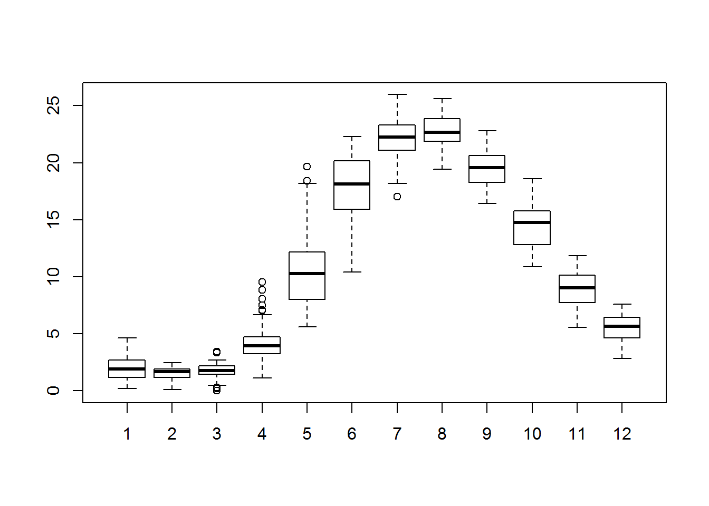
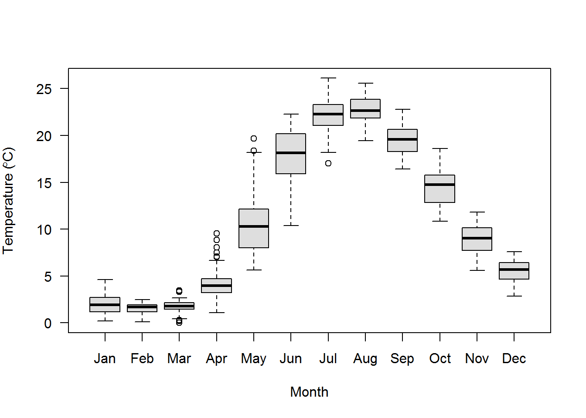
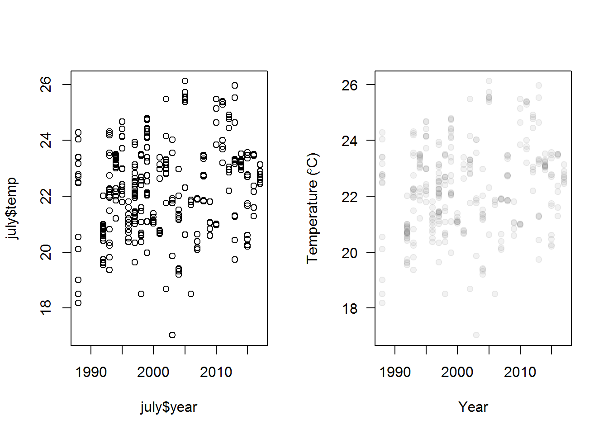
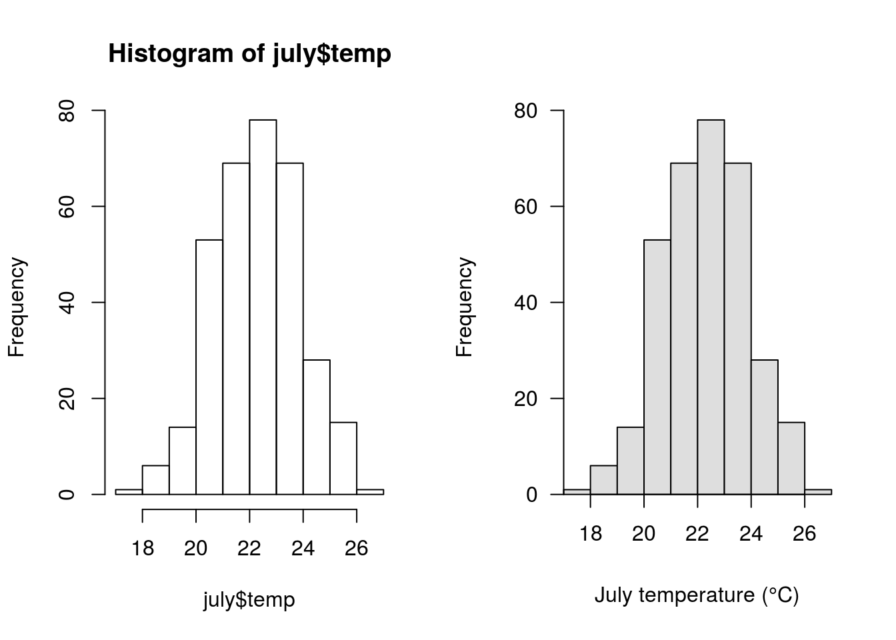

Introductory R

Welcome to programming in R. This module will serve as a tutorial to help you get acquainted with the R programming environment, and get you started with some basic tools and information to help along the way.
Like any language, the learning curve for R is steep (like a cliff, not a hill), but once you get the hang of it you can learn a lot quickly. Cheat sheets like the tutorial from the workshop (or these) can help you along the way by serving as handy references.
Working with code
We will spend a bit of time during the morning session to orient attendees with the RStudio IDE and talk about file management. Here are some additional pointers about working with code.
There are a lot of different ways to write computer code. Each has pros and cons and all of them are intended to increase efficiency and readability. There is no “right” way to edit your code, but it will make your life easier if you find a style you like and stick to those conventions. Here are a couple of points that can be helpful when you are just starting out:
Commenting code is helpful
# This is a comment.
# We know because it is preceded
# by a hashtag, or 'octothorpe'.
# R ignores comments so you have
# a way to write down what you have
# done or what you are doing.
# This is useful for sharing
# code or just figuring out
# what you did.There are a few ways to run code:
Click on a line of code and press ctrl + Enter
Highlight a chunk of code and do the same
Either 1 or 2, but press the ‘Run’ button at the top of the source file to run the code block.
Once you’ve run a code block you can change it and then press the button next to ‘Run’ (or ctrl+shift+P) to ‘re-run’ the previous block of code.
Try it on your own!
Type the following line of code into a blank source file, and run it.
# Add 1 and 1 together 1 + 1## [1] 2
Section breaks help organization
I like to use the built-in headings to separate big chunks of code and keep things organized. It works well for code-folding in R and when I’ve written a script that is several hundred lines long, some times all I want to see are the section headings. Go ahead and paste the code below into a source file. Press the upside-down triangle to the right of the line number to see what it does.
# Section heading ----
# Follow a comment with four dashes
# to insert a section headingSome stricter R programming rules:
All code is in R is case sensitive.
# Example (run the following lines):
a = 1
A = 2
a == A## [1] FALSEWe have few things going on above.
We’ve defined a couple of objects for the first time. You do this by assigning the value on the right of the arrow to the variable on the left. We can use the assignment arrow
<-or an equal sign=. The former is preferred, but for our purposes it will make absolutely no difference, and=is much faster to type than<-.Note in the output that the two objects are not the same, and R knows this when we test to see.
The
==that we typed is a logical test that checks to see if the two objects are identical. If they were, then R would have returned aTRUEinstead ofFALSE. This operator is very useful, and is common to a number of programming languages.
You can’t start an object name with a number, but you can end it with one.
# In Rstudio there are nifty little
# markers to show this is broken once
# you have saved your source file.
1a = 1
# But this one works
# Try it by typing
# a1,
# print(a) or
# show(a)
# in the console:
a1 = 1 R will overwrite objects sequentially, so don’t name two things the same, unless you don’t need the first. Even then it is risky business. In the example below, our object a takes on the second value provided.
a = 1
a = 2
a## [1] 2Some things can be expressed in multiple ways. For example, both ‘T’ and ‘TRUE’ can be used to indicate a logical value of TRUE.
T == TRUE## [1] TRUESome names are reserved or pre-defined. Did you notice that R already knew what T and TRUE were without us defining them? These reserved operators, and built in functions are the building blocks of the R language.
For example,
in, if, else, for, function()…and a mess of others have special uses. If it is not obvious already, we should avoid using these words to name objects that we define in our source files.
Some symbols are also reserved for special use as operators, like:
+,-, *, /, % %, &, |, <, >, (, {, [, '', "", ...…and a bunch of others.
Some other handy coding tricks
The home button will move you to the start of the line of code, and to the start of the line if you press it twice.
The end button on your keyboard will take you to the end of a line so you can edit code. These will help you move around your code faster.
The tab button on your keyboard will move the code to the right some number of spaces (user defined). Pressing SHIFT + TAB will move code to the left. These can help you organize your code.
Single click moves the cursor into position. Double click will highlight the word you are clicking, and a triple left click will highlight an entire line.
Use search and replace functionality to copy big chunks of code and change names as needed. You can also use this to just search your code. Press CTRL + F to open the sub menu at the top. When code gets so redundant that you copy and paste the same code several times, you are probably better off writing a function that you can use whenever you like.
Functions are the life blood
Functions make R what it is. These are all of the “commands”" that are available to a user through the base software, or through packages that can be added on. When you can’t find the function you need you can write one to do it (eventually). At its most basic level, functions do stuff to objects in R. This is what makes R both a functional programming language and an object-oriented programming language.
Data structures and manipulation
Vectors
Despite the wide range of uses you hear about, R is a statistical programming language at its core. It is not a mathematical language or a general programming language, although it has a lot of functionality outside this original scope. R is what is known as a “high-level” or “interpreted” programming language. This means the pieces that make it up are a little more intuitive to the average user than most low-level languages like C or C++. The back-end of R is, in fact, a collection of low-level code that builds up the functionality that we need. This means that R has a broad range of uses, from data management to math, and even GIS and data visualization tools, all of which are conveniently wrapped in an “intuitive”, “user-friendly” language.
Part of this flexibility comes from the fact that R is also a “vectorized” language. Why do you care about that? This will help you wrap your head around how objects are created and stored in R, which will help you understand how to make, access, modify, and combine the data that you will need for any approach to data analysis.
Let’s take a look at how this works and why it matters. Here, we have defined a as a variable with the value of 1…or have we?
a = 1
a## [1] 1What is the square bracket in the output here? It’s an index. The index is telling us that the first element of a is 1. This means that a is actually a “vector”, not a “scalar” or singular value. You can think of a vector as a column in an excel spreadsheet or an analagous data table. By treating every variable as a vector, or an element thereof, the language becomes much more generalizable.
So, even if we define something with a single value, it is still just a vector with one element. For us, this is important because of the way that it lets us do math. It makes vector operations so easy that we don’t even need to think about them when we start to make statistical models. It makes working through the math a zillion times easier than on paper! In terms of programming, it can make a lot of things easier, too.
The vector is the basic unit of information in R. Pretty much everything else is either made of vectors, or can be contained within one. Wow, what an existential paradox that is. Let’s play with some:
Atomic vectors
A vector that can hold one and only one kind of data:
- Character
- Numeric
- Integer
- Logical
- Factor
- Date/time
And some others, but none with which we’ll concern ourselves.
Below are some examples of atomic vectors. Run the code to see what it does:
Integers and numerics
a = c(1, 2, 3, 4, 5) # Make a vector of integers 1-5
print(a) # One way to look at our vector## [1] 1 2 3 4 5show(a) # Another way to look at it## [1] 1 2 3 4 5a # A third way to look at it## [1] 1 2 3 4 5str(a) # Look at the structure, integer class## num [1:5] 1 2 3 4 5Here is another way to make the same vector, but we need to pay attention to how R sees the data type. A closer look shows that these methods produce a numeric vector (num) instead of an integer vector (int). For the most part, this one won’t make a huge difference, but it can become important when writing statistical models.
# Define the same vector using a sequence
a = seq(from=1, to=5, by=1)
str(a) ## num [1:5] 1 2 3 4 5Characters and factors
Characters are anything that is represented as text strings.
b = c('a', 'b', 'c', 'd', 'e') # Make a character vector
b # Print it to the console## [1] "a" "b" "c" "d" "e"str(b) # Now it's a character vector## chr [1:5] "a" "b" "c" "d" "e"b = as.factor(b) # But we can change if we want
b ## [1] a b c d e
## Levels: a b c d estr(b) # Look at the data structure## Factor w/ 5 levels "a","b","c","d",..: 1 2 3 4 5Factors are a special kind of data type in R that we may run across from time to time. They have levels that can be ordered numerically. This is not important except that it becomes useful for coding variables used in statistical models- R does most of this behind the scenes and we won’t have to worry about it for the most part. In fact, in a lot of cases we will want to change factors to numerics or characters so they are easier to manipulate.
This is what it looks like when we code a factor as number:
as.numeric(b)
# What did that do?
?as.numeric Aside: we can ask R what functions mean by adding a question mark as we do above. And not just functions: we can ask it about pretty much any built-in object. The help pages take a little getting used to, but once you get the hang of it…in the mean time, the internet is your friend and you will find a multitude of online groups and forums with a quick search.
Logical vectors
Most of the logicals we deal with are yes/no or comparisons to determine whether a given piece of information matches a condition. Here, we use a logical check to see if the object a we created earlier is the same as object b. If we store the results of this logical check to a new vector c, we get a new logical vector of TRUE and FALSE.
# The '==' compares the numeric vector to the factor one
c <- a == b
c ## [1] FALSE FALSE FALSE FALSE FALSEstr(c) ## logi [1:5] FALSE FALSE FALSE FALSE FALSEWe now have a logical vector. For the sake of demonstration, we could perform any number of logical checks on a vector (it does not need to be a logical like c above).
is.na(a) # We can check for missing values## [1] FALSE FALSE FALSE FALSE FALSEis.finite(a) # We can make sure that all values are finite## [1] TRUE TRUE TRUE TRUE TRUE!is.na(a) # The exclamation point means 'not'## [1] TRUE TRUE TRUE TRUE TRUEa == 3 # We can see if specific elements meet a criterion## [1] FALSE FALSE TRUE FALSE FALSEunique(b) # We can just look at unique values## [1] a b c d e
## Levels: a b c d eThe examples above are all fairly simple vector operations. These form the basis for data manipulation and analysis in R.
Vector operations
A lot of data manipulation in R is based on logical checks like the ones shown above. We can take these one step further to actually perform what one might think of as a query.
For example, we can reference specific elements of vectors directly. Here, we specify that we want to print the third element of a.
# This one just prints it
a[3] ## [1] 3# This one stores it in a new object
f <- a[3]Important
If it is not yet obvious, we have to assign the output of functions to new objects for the values to be useable in the future. In the example above, a is never actually changed. This is a common source of confusion early on.
Going further, we could select vector elements based on some condition. On the first line of code, we tell R to show us the indices of the elements in vector b that match the character string c. Outloud, we would say, “b where the value of b is equal to c” in the first example. We can also use built-in R functions to just store the indices for all elements of b where b is equal to the character string ‘c’.
b[b=='c'] ## [1] c
## Levels: a b c d ewhich(b=='c')## [1] 3Perhaps more practically speaking, we can do elementwise operations on vectors easily in R.
a * .5 # Multiplication## [1] 0.5 1.0 1.5 2.0 2.5a + 100 # Addition## [1] 101 102 103 104 105a - 3 # Subtraction## [1] -2 -1 0 1 2a / 2 # Division## [1] 0.5 1.0 1.5 2.0 2.5a ^ 2 # Exponentiation## [1] 1 4 9 16 25exp(a) # This is the same as 'e to the...'## [1] 2.718282 7.389056 20.085537 54.598150 148.413159log(a) # Natural logarithm## [1] 0.0000000 0.6931472 1.0986123 1.3862944 1.6094379log10(a) # Log base 10## [1] 0.0000000 0.3010300 0.4771213 0.6020600 0.6989700b = as.character(b)
paste(b, 'AAAA', sep='') # We can append text## [1] "aAAAA" "bAAAA" "cAAAA" "dAAAA" "eAAAA"paste('AAAA', b, sep='') # We can do it the other way## [1] "AAAAa" "AAAAb" "AAAAc" "AAAAd" "AAAAe"paste('AAAA', b, sep='--') # Add symbols to separate## [1] "AAAA--a" "AAAA--b" "AAAA--c" "AAAA--d" "AAAA--e"gsub(pattern='c', replacement='AAAA', b) # We can replace text## [1] "a" "b" "AAAA" "d" "e"e = paste('AAAA', b, sep='') # Make a new object
e # Print to console## [1] "AAAAa" "AAAAb" "AAAAc" "AAAAd" "AAAAe"substr(e, start=5, stop=5) # We can strip text (or dates, or times, etc.)## [1] "a" "b" "c" "d" "e"We can check how many elements are in a vector.
length(a) # A has a length of 5, try it and check it## [1] 5a # Yup, looks about right## [1] 1 2 3 4 5And we can do lots of other nifty things like this.
Matrices
Matrices are rectangular objects that we can think of as being made up of vectors.
We can make matrices by binding vectors that already exist
cbind(a,e)## a e
## [1,] "1" "AAAAa"
## [2,] "2" "AAAAb"
## [3,] "3" "AAAAc"
## [4,] "4" "AAAAd"
## [5,] "5" "AAAAe"Or we can make an empty one to fill.
matrix(0, nrow=3, ncol=4)## [,1] [,2] [,3] [,4]
## [1,] 0 0 0 0
## [2,] 0 0 0 0
## [3,] 0 0 0 0Or we can make one from scratch.
mat = matrix(seq(1, 12), ncol=3, nrow=4)We can do all of the things we did with vectors to matrices, but now we have more than one column, and official ‘rows’ that we can also use to these ends:
ncol(mat) # Number of columns## [1] 3nrow(mat) # Number of rows## [1] 4length(mat) # Total number of entries## [1] 12mat[2, 3] # Value of row 2, column 3## [1] 10str(mat) ## int [1:4, 1:3] 1 2 3 4 5 6 7 8 9 10 ...See how no. of rows and columns is defined in data structure? With rows and columns, we can assign column names and row names.
colnames(mat) = c('first', 'second', 'third')
rownames(mat) = c('This', 'is', 'a', 'matrix')
mat## first second third
## This 1 5 9
## is 2 6 10
## a 3 7 11
## matrix 4 8 12str(mat) # Take a look to understand## int [1:4, 1:3] 1 2 3 4 5 6 7 8 9 10 ...
## - attr(*, "dimnames")=List of 2
## ..$ : chr [1:4] "This" "is" "a" "matrix"
## ..$ : chr [1:3] "first" "second" "third"mat*2 ## first second third
## This 2 10 18
## is 4 12 20
## a 6 14 22
## matrix 8 16 24All the same operations we did on vectors above…one example.
More on matrices as we need them. We won’t use these a lot in this module, but R relies heavily on matrices to do linear algebra behind the scenes in the models that we will be working with.
Dataframes
Dataframes are like matrices, only not. They have a row/column structure like matrices. But, they can hold more than one data type!
Dataframes are made up of atomic vectors.
This is probably the data structure that we will use most here, along with atomic vectors.
Let’s make a dataframe to see how it works.
# Make a new object 'a' from a sequence
a = seq(from=.5, to=10, by = .5)
# Vector math: raise each 'a' to power of 2
b = a^2
# Replicates values in object a # of times
c = rep(c('a','b','c','d'), 5)
# Note, we don't use quotes for objects,
# but we do for character variables
d = data.frame(a, b, c) Now we can look at it:
d # Print the dataframe## a b c
## 1 0.5 0.25 a
## 2 1.0 1.00 b
## 3 1.5 2.25 c
## 4 2.0 4.00 d
## 5 2.5 6.25 a
## 6 3.0 9.00 b
## 7 3.5 12.25 c
## 8 4.0 16.00 d
## 9 4.5 20.25 a
## 10 5.0 25.00 b
## 11 5.5 30.25 c
## 12 6.0 36.00 d
## 13 6.5 42.25 a
## 14 7.0 49.00 b
## 15 7.5 56.25 c
## 16 8.0 64.00 d
## 17 8.5 72.25 a
## 18 9.0 81.00 b
## 19 9.5 90.25 c
## 20 10.0 100.00 dNotice that R assigns names to dataframes on the fly based on object names. They are not colnames as with matrices, they are names.
# We can look at these
names(d) # All of the names## [1] "a" "b" "c"names(d)[2] # One at a time: note indexing, names(d) is a vector!!## [1] "b"# We can change the names
names(d) = c('Increment', 'Squared', 'Class') # All at once- note quotes
names(d) # Print it to see what this does## [1] "Increment" "Squared" "Class"names(d)[3] = 'Letter' # Or, change one at a time..
names(d) # Print it again to see what changed## [1] "Increment" "Squared" "Letter"e = d # We can also rename the entire dataframe
head(e) # Head shows first six rows by default## Increment Squared Letter
## 1 0.5 0.25 a
## 2 1.0 1.00 b
## 3 1.5 2.25 c
## 4 2.0 4.00 d
## 5 2.5 6.25 a
## 6 3.0 9.00 bhead(e, 10) # Or, we can look at any other number that we want## Increment Squared Letter
## 1 0.5 0.25 a
## 2 1.0 1.00 b
## 3 1.5 2.25 c
## 4 2.0 4.00 d
## 5 2.5 6.25 a
## 6 3.0 9.00 b
## 7 3.5 12.25 c
## 8 4.0 16.00 d
## 9 4.5 20.25 a
## 10 5.0 25.00 be$Sqrt = sqrt(e$Increment)
e # We can make new columns in data frames like this!## Increment Squared Letter Sqrt
## 1 0.5 0.25 a 0.7071068
## 2 1.0 1.00 b 1.0000000
## 3 1.5 2.25 c 1.2247449
## 4 2.0 4.00 d 1.4142136
## 5 2.5 6.25 a 1.5811388
## 6 3.0 9.00 b 1.7320508
## 7 3.5 12.25 c 1.8708287
## 8 4.0 16.00 d 2.0000000
## 9 4.5 20.25 a 2.1213203
## 10 5.0 25.00 b 2.2360680
## 11 5.5 30.25 c 2.3452079
## 12 6.0 36.00 d 2.4494897
## 13 6.5 42.25 a 2.5495098
## 14 7.0 49.00 b 2.6457513
## 15 7.5 56.25 c 2.7386128
## 16 8.0 64.00 d 2.8284271
## 17 8.5 72.25 a 2.9154759
## 18 9.0 81.00 b 3.0000000
## 19 9.5 90.25 c 3.0822070
## 20 10.0 100.00 d 3.1622777Referencing specific elements of a dataframe is similar to a the same in a matrix, with some added capabilities. We’ll look at this with some real data so it’s more fun. Most of the packages in R have built-in data sets that we can use for examples, too. For now, let’s read in our first real data file as most of our data are stored that way and will be read in as .csv or .txt files.
Loading data from files
First, we need to make sure that the data are in a place where R can access them. One way to do this is to hard-code the file path (e.g., setwd("C:/Users/.../physical.csv")), but that makes it a pain when you hand off code or reorganize computer files. I usually just make sure that my data and my code are in the same directory on my computer if I am working on an analysis of some sort (or writing a website in this case). Then, we can set the working directory in R to that folder using any number of different options.
Next, we have to assign our data to a new object, or R will just dump it to the console and it won’t be stored in our environment. In this case, I am going to give my data a meaningful name based on the lake from which they were collected.
Finally, we have to tell R how to read the file and what the name of the file is.
otsego <- read.csv('physical.csv')If it looks like nothing happened, then it probably worked. Have a look at your environment tab to make sure it is there (mine is bottom left, yours may be elsewhere depending on how you set up your pane layout).
Now that we have some real data, let’s break it down a little bit.
ls() # We can use ls() to see what is in our environment## [1] "a" "A" "b" "c" "d" "e" "f"
## [8] "im" "intmod" "lim" "limnos" "lmod" "mainmod" "mat"
## [15] "mod" "newd" "ohio" "otsego" "plotter" "preds" "ymod"head(otsego) # Look at the first six rows of data in the object## lake date month year depth temp pH do_mgl cond do_sat
## 1 Otsego Lake 4/28/2017 4 2017 0.1 8.82 7.90 11.69 0.307 100.0
## 2 Otsego Lake 5/17/2017 5 2017 0.1 10.15 7.76 11.48 0.308 101.1
## 3 Otsego Lake 6/1/2017 6 2017 0.1 14.90 8.10 10.41 0.315 103.1
## 4 Otsego Lake 6/14/2017 6 2017 0.1 20.91 8.32 9.85 0.312 110.5
## 5 Otsego Lake 6/29/2017 6 2017 0.1 20.57 8.45 9.14 0.303 101.8
## 6 Otsego Lake 7/13/2017 7 2017 0.1 23.13 8.39 8.66 0.310 NAnrow(otsego) # How many rows does it have?## [1] 10006ncol(otsego) # How many columns?## [1] 10names(otsego) # What are the column names?## [1] "lake" "date" "month" "year" "depth" "temp" "pH"
## [8] "do_mgl" "cond" "do_sat"str(otsego) # Have a look at the data structure## 'data.frame': 10006 obs. of 10 variables:
## $ lake : Factor w/ 1 level "Otsego Lake": 1 1 1 1 1 1 1 1 1 1 ...
## $ date : Factor w/ 539 levels "1/10/1995","1/10/1996",..: 200 218 264 272 309 341 387 427 536 518 ...
## $ month : int 4 5 6 6 6 7 7 8 9 9 ...
## $ year : int 2017 2017 2017 2017 2017 2017 2017 2017 2017 2017 ...
## $ depth : num 0.1 0.1 0.1 0.1 0.1 0.1 0.1 0.1 0.1 0.1 ...
## $ temp : num 8.82 10.15 14.9 20.91 20.57 ...
## $ pH : num 7.9 7.76 8.1 8.32 8.45 8.39 8.17 8.38 7.94 8.16 ...
## $ do_mgl: num 11.69 11.48 10.41 9.85 9.14 ...
## $ cond : num 0.307 0.308 0.315 0.312 0.303 0.31 0.3 0.292 0.282 0.285 ...
## $ do_sat: num 100 101 103 110 102 ...summary(otsego) # Summarize the variables in the dataframe## lake date month year
## Otsego Lake:10006 8/17/2006 : 24 Min. : 1.000 Min. :1988
## 10/18/1994: 20 1st Qu.: 5.000 1st Qu.:1995
## 10/3/1994 : 20 Median : 7.000 Median :2001
## 11/6/1995 : 20 Mean : 7.268 Mean :2002
## 12/13/1994: 20 3rd Qu.: 9.000 3rd Qu.:2010
## 6/16/1994 : 20 Max. :12.000 Max. :2018
## (Other) :9882
## depth temp pH do_mgl
## Min. : 0.10 Min. : 0.000 Min. : 6.080 Min. : 0.410
## 1st Qu.: 8.00 1st Qu.: 4.660 1st Qu.: 7.590 1st Qu.: 7.950
## Median :18.00 Median : 6.110 Median : 7.860 Median : 9.450
## Mean :21.95 Mean : 8.263 Mean : 7.869 Mean : 9.121
## 3rd Qu.:40.00 3rd Qu.: 9.710 3rd Qu.: 8.130 3rd Qu.:10.960
## Max. :50.00 Max. :26.120 Max. :11.020 Max. :16.440
## NA's :1 NA's :504 NA's :40
## cond do_sat
## Min. :0.1430 Min. : 0.30
## 1st Qu.:0.2640 1st Qu.: 77.90
## Median :0.2800 Median : 89.30
## Mean :0.2804 Mean : 86.51
## 3rd Qu.:0.3020 3rd Qu.: 97.00
## Max. :0.3770 Max. :1145.90
## NA's :251 NA's :7801Now let’s look at some specific things.
What is the value in 12th row of the 4th column of otsego? Notice that we have two indices now. That is because we have both rows (first dimension) and columns (second dimension) in our data set now!
otsego[12, 4]## [1] 2017Another way to say this is, “What is the 12th value of depth in otsego”?
otsego[12, 'depth']## [1] 0.1
More realistically, we might want to know the avereage temperature (temp) at a given depth in the lake. In the example below, we ask R for the mean temperature at 10 m across all observations (rows). Notice that now we are back to a single dimension inside our index brackets [] because the column temp is an atomic vector inside of otsego. The dollar sign ($) here is telling R to look for something called temp inside of the otsego dataframe.
mean( otsego$temp[otsego$depth==10.0] , na.rm=TRUE)## [1] 10.49944Wow…heavy stuff, but this is how the wheels turn. Let’s take another step back and break this down even further.
In the example above, we are using a function called mean to do stuff to an object that is a subset of otsego$temp. The way these functions do things is critical to working in R.
For example, we could write a new function to calculate the mean if we wanted to,… right? Here, we define a function called myMean that takes one required argument. Each required argument can take on user-specified values. In this case, that value must be a vector that is or can be coerced into numeric format. Here, we also add a chunk of code to deal with NA values.
# Define a new function to calculate mean
myMean <- function(x){
# If any of the observations are NA
if(any(is.na(x))){
# Then exclude those values of
# x from calculation
x_bar = sum(x[!is.na(x)])/length(x[!is.na(x)])
# Otherwise
} else {
# Calculate from all values of x
x_bar = sum(x)/length(x)
}
return(x_bar)
}Just to make sure it works right, let’s go ahead and test it out.
test <- myMean(otsego$temp[otsego$depth==10])
test## [1] 10.49944Yay!
Now, what if we wanted to do something more useful, like convert temperature from celcius to Farenheit? We can apply the same idea here:
# Define a function to convert temperature
# in celcius to temperature in farenheit:
cToF <- function(cels){
faren <- cels*(9/5) + 32
return(faren)
}
# Test the function out.
# Here, we create a new variable in the
# otsego dataframe to hold the result
otsego$tempF <- cToF(otsego$temp)
# Look at the first few elements
head(otsego$tempF)## [1] 47.876 50.270 58.820 69.638 69.026 73.634Now that we have our new column, we may wish to write this back out to a file so we can share it with our collaborators (who for some reason need temperature measured on the Farenheit scale?).
There are a couple of ways to do this.
First, we could just use the write.csv function. This one is pretty limited in terms of options, but that also makes it easy to use. We just need to tell R what the object is that we want to write to a csv file and what the name of the file will be. Do be careful because this will overwrite existing files with the same name without asking if that is okay.
write.csv(x=otsego, file='physicalF.csv')I like a little more flexibility in the file write process, so I usually use the write.table function. This can be used to achieve the same end depending on options, but allows other options like ommitting row.names from the output file. Here is an example of how it works:
# Write the data set to a csv file.
# We specify the object, the filename, and
# we tell R we don't want rownames or quotes
# around character strings. Finally, we tell
# R to separate columns using a comma.
# We could do exactly the same thing, but use a ".txt"
# file extensions, and we would get a comma-separated
# text file if we needed one.
write.table(x=otsego, file='physicalF.csv', row.names=FALSE,
quote=FALSE, sep=',')A third way to write objects from R to a file is by saving it as an R data file (.rda extension). This comes in handy when we have very large or very complex objects. In general, .rda files save and load more quickly because they are stored as compressed code (in the form of lists). Here is what it looks like:
save(otsego, file='otsego.rda')When this kind of a data file is loaded back into the environment (using load(file='otsego.rda'))’ it has the same name, but is stored as a list. Dun, dun, dun…
Lists
Lists are the ultimate container in R. They are actually a generalized vector that can hold different classes of data. Each element of a list can be any kind of object (an atomic vector, a matrix, a dataframe, or even another list!!). In fact, even a dataframe can be thought of as a list with just one element (the dataframe). In fact, a data frame is an element of the list that comprises our environments. Gross, right?
The real, filthy R programming relies heavily on lists. We will have to work with them at some point, but we won’t take a ton of time on them here. In general, when you run a regression model or do an interpolation, you can expect that the results will come back in a list.
Let’s make a list, just to see how they work
myList = vector(mode='list', length=4)
myList[[1]] = a
myList[[2]] = c
myList[[3]] = mat
myList[[4]] = d
# Print it
myList # Cool, huh?## [[1]]
## [1] 0.5 1.0 1.5 2.0 2.5 3.0 3.5 4.0 4.5 5.0 5.5 6.0 6.5 7.0
## [15] 7.5 8.0 8.5 9.0 9.5 10.0
##
## [[2]]
## [1] "a" "b" "c" "d" "a" "b" "c" "d" "a" "b" "c" "d" "a" "b" "c" "d" "a"
## [18] "b" "c" "d"
##
## [[3]]
## first second third
## This 1 5 9
## is 2 6 10
## a 3 7 11
## matrix 4 8 12
##
## [[4]]
## Increment Squared Letter
## 1 0.5 0.25 a
## 2 1.0 1.00 b
## 3 1.5 2.25 c
## 4 2.0 4.00 d
## 5 2.5 6.25 a
## 6 3.0 9.00 b
## 7 3.5 12.25 c
## 8 4.0 16.00 d
## 9 4.5 20.25 a
## 10 5.0 25.00 b
## 11 5.5 30.25 c
## 12 6.0 36.00 d
## 13 6.5 42.25 a
## 14 7.0 49.00 b
## 15 7.5 56.25 c
## 16 8.0 64.00 d
## 17 8.5 72.25 a
## 18 9.0 81.00 b
## 19 9.5 90.25 c
## 20 10.0 100.00 dnames(myList) # No names on the fly like a df## NULLnames(myList) = c('a', 'c', 'mat', 'd') # Give it names like a dataframe
myList # See how the names work now?## $a
## [1] 0.5 1.0 1.5 2.0 2.5 3.0 3.5 4.0 4.5 5.0 5.5 6.0 6.5 7.0
## [15] 7.5 8.0 8.5 9.0 9.5 10.0
##
## $c
## [1] "a" "b" "c" "d" "a" "b" "c" "d" "a" "b" "c" "d" "a" "b" "c" "d" "a"
## [18] "b" "c" "d"
##
## $mat
## first second third
## This 1 5 9
## is 2 6 10
## a 3 7 11
## matrix 4 8 12
##
## $d
## Increment Squared Letter
## 1 0.5 0.25 a
## 2 1.0 1.00 b
## 3 1.5 2.25 c
## 4 2.0 4.00 d
## 5 2.5 6.25 a
## 6 3.0 9.00 b
## 7 3.5 12.25 c
## 8 4.0 16.00 d
## 9 4.5 20.25 a
## 10 5.0 25.00 b
## 11 5.5 30.25 c
## 12 6.0 36.00 d
## 13 6.5 42.25 a
## 14 7.0 49.00 b
## 15 7.5 56.25 c
## 16 8.0 64.00 d
## 17 8.5 72.25 a
## 18 9.0 81.00 b
## 19 9.5 90.25 c
## 20 10.0 100.00 dmyList[[1]] # We reference these differently [[]]## [1] 0.5 1.0 1.5 2.0 2.5 3.0 3.5 4.0 4.5 5.0 5.5 6.0 6.5 7.0
## [15] 7.5 8.0 8.5 9.0 9.5 10.0myList[[2]][5] # But can still get into each object## [1] "a"# Play around with the numbers to see what they do!
myList$c[1] # Can also reference it this way!## [1] "a"Very commonly, model objects and output are stored as lists. In fact, most objects that require a large amount of diverse information in R pack it all together in one place using lists, that way we always know where to find it. It seems like a lot to take in now, but will be very useful in the future.
Summarizing and visualizing data
Now that we have a handle on how R works, and how to get our data in, let’s take a little time to examine statistical and graphical summaries of our data.
Data summaries
Some of the most fundamental work we do involves summarizing information across ranges of categories or factors (e.g. mean water temperature in July). This helps us start to detangle complicated patterns in data, and can be helpful to others when they read about our awesome research.
Most data summaries are handled effectively using a limited number of R functions applied in different ways. A fairly small number of functions can be used to imitate the functionality of things like queries, look-up tables, and pivot tables that one might use in other software programs. Once you get used to working with these functions, the whole process is a lot faster and a lot more reproducible in R compared to other programs.
We have already encountered a few functions for data summary in our time together. Most of these have intuitive names and serve obvious purposes once you know what they are called.
Here is a quick run-down on a few of the basics. Each of these requires a vector as input.
mean(otsego$temp, na.rm=T) ## [1] 8.262847median(otsego$temp, na.rm=T) ## [1] 6.11min(otsego$temp, na.rm=T)## [1] 0max(otsego$temp, na.rm=T)## [1] 26.12sd(otsego$temp, na.rm=T) # Standard deviation## [1] 5.734517var(otsego$temp, na.rm=T) # Variance ## [1] 32.88469quantile(otsego$temp, probs=c(0.025, 0.975), na.rm=T) # Quantiles, with user-defined thresholds## 2.5% 97.5%
## 1.84 22.89We can combine these into a single function to summarize entire dataframes, but this is not usually very useful. For example, we could use summary to return min, median, mean, max and the inner quartile range for each variable in an entire dataframe or matrix, but this is a little meaningless when we are looking at marginal summary stats for each variable.
summary(otsego)Usually, we would like to summarize variables across groups (e.g., ‘control’ or ‘treatment’) or discrete ranges of data (e.g., month in otsego). There are a number of ways to do this in R, and what we use depends partly on the application, and partly on personal preference. Most of these operate using what is known as the split-apply-combine approach. The simplest is probably the aggregate function.
# Summarize temperature by month in otsego data
aggregate(formula=temp~month, data=otsego, FUN=mean)## month temp
## 1 1 2.645176
## 2 2 2.114755
## 3 3 2.201694
## 4 4 3.922480
## 5 5 6.657329
## 6 6 9.297003
## 7 7 10.670483
## 8 8 11.140326
## 9 9 10.698824
## 10 10 9.495450
## 11 11 7.471370
## 12 12 5.375337We can even use this to summarize a variable across multiple grouping variables. Perhaps we want to see mean temperature by month and depth?
# Summarize temperature by month in otsego data
aggregate(formula=temp~month+depth, data=otsego, FUN=mean)This returns a pretty unwieldy result because of the number of unique depths (go ahead and run the code). We will come back to this example when we make isopleths during the intermediate session in the afternoon.
More importanly for now, we are limited in our ability to summarize a variable in more than one way using aggregate or other functions in the base package. For example, we frequently make tables for papers or reports that show means with standard deviations, confidence intervals, or both. To do this, we will need to make our first sojourn out of base and into the myriad packages that make up R.
Normally, we would just load a package from the default library location once we have installed it, like this:
library(plyr)But, in the absence of a network connection we can’t install packages, so we will load them from a local library (directory) today. To do this, we just need to point R to the correct location. In this case, we have put this right in the data file that you downloaded for the workshop, so we will use the relative path to load the plyr package.
library(plyr, lib.loc = "./r_libs/plyr")With the package loaded from our local library, we can now use the functions that it comprises. For this example, we will use ddply to summarize the otsego data. (There is also a function called ddply in the dplyr package that is a newer, beefed-up version of plyr focusing only on dataframes and remote datatables)
Here is one way that we can use ddply to summarize temperature across multiple factors.
# Summarize mean and sd by month and depth
summarydata <- ddply(
.data = otsego,
.variables = c('month', 'depth'),
summarize,
mean = mean(temp, na.rm = T),
sd = sd(temp, na.rm = T)
)Now, we can take a look at the summary:
head(x=summarydata, n=10)## month depth mean sd
## 1 1 0.1 1.732143 1.3281982
## 2 1 2.0 2.099231 1.0747904
## 3 1 4.0 2.123571 0.9881421
## 4 1 6.0 2.248462 0.9621144
## 5 1 8.0 2.366923 0.9079775
## 6 1 10.0 2.385714 0.8795341
## 7 1 12.0 2.500000 0.8600775
## 8 1 14.0 2.515714 0.8127703
## 9 1 16.0 2.595385 0.8133635
## 10 1 18.0 2.649231 0.7865162And, we can write it out to a .csv file that we can use to build tables in Excel or Word (or any number of non-Microsoft applications that we like!).
write.table(summarydata, 'summary.csv', row.names = FALSE,
quote=FALSE, sep=',')The result is a table that is ready to go with just a few formatting changes, even if it is ridiculously long.
Basic graphs
Now that we have an informative table, let’s see what we can do about distilling the 10,000 rows of data we have into a couple of simple graphs.
One of the most attractive aspects of working with data in R is the power of the base graphics package. We basically have access to any kind of plot you can imagine, and if you can imagine a kind of plot that isn’t there, you can create it by hand. I have even used cartesian coordinates to create useful plots where no other functions were available.
One of the most powerful aspects of plotting in R is that we are working with a scripted language. That means, that if we go out and collect more data, we can add those to our existing data files, or replace the old files with new ones, and re-run our code, with minimal changes, to produce updated graphs. This will make you feel a lot better about writing 20 or 30 lines of code to produce the kind of graph that you’ll be happy with.
Boxplots
Usually, when we are trying to summarize a continuous response across categorical explanatory variables, a boxplot is a reasonable starting place. Wow, that’s a lot of bold in one sentence.
Why don’t we start simple? Let’s make a boxplot of temperatures by month in the lake.
# Make a simple boxplot of epilimnion temperatures by month
# Note that I pass this restriction using the depth variable
# in the Otsego data because I know (about) where the
# thermocline is in that lake.
boxplot(formula=temp~month, data=otsego[otsego$depth<8,])
Well, that was really easy, but let’s face it…it’s ugly. In fact, this is the kind of output that makes the old-school statisticians not like the “clunky” graphics from R, so let’s see if we can snaz it up a little bit. I am going to spread out the code across multiple lines so you can get a feel for what’s going on here.
# Make the plot
boxplot(
formula=temp~month, data=otsego[otsego$depth<8,],
col='gray87', # Box color: the best one
xaxt='n', # We'll make our own x-axis
yaxt='n', # Same for the y-axis
xlab='Month', # Here is an x-axis label
ylab=expression(paste('Temperature (', degree, 'C)'))
)
# Add x-axis. substr() takes the
# first 3 letters of month
axis(side=1,
at=c(1:12),
labels=substr(month.name, start=1, stop=3)
)
# Add the y-axis, las rotates the labels
axis(side=2, las=2)
This is looking a lot better, and we didn’t even need to change that much to get here. But, we could do a little better by specifying some additional, low-level parameters (pars:
# Set up the plotting window
par(mar=c(5,5,1,1))
# Make the plot
boxplot(
formula=temp~month, data=otsego[otsego$depth<8,],
col='gray87', # Box color: the best one
xaxt='n', # We'll make our own x-axis
yaxt='n', # Same for the y-axis
xlab='Month', # Here is an x-axis label
ylab=expression(paste('Temperature (', degree, 'C)')),
outline=FALSE,
pars=list(
staplewex=0,
boxcol='gray60', # Another of the great grays
boxlwd=2,
medlwd=1, medcol='gray60',
medpch=21, medbg='gray40', # Yet another...so many!
whisklty=1, whisklwd=2, whiskcol='gray60'
)
)
# Add x-axis
axis(side=1,
at=c(1:12),
labels=substr(month.name, start=1, stop=3)
)
# Add the y-axis
axis(side=2, las=2)
Alright, now our graph is starting to look pretty snazy!
Let’s move on and check out a couple more plots to show off some of the power of the base graphics package that is loaded by default.
Scatterplots
Here, we will skip the niceties and cut right to the chase. We will set a couple of graphical parameters up front so we can compare our two graphs side by side. To do this, we specify a graphical matrix using the argument mfrow, which needs to be a vector containing the number of rows, and the number of columns for the plotting window (defaults to c(1,1)). Then, we will make a default scatterplot on the left, and a juiced-up version on the right.
# Subset the data so we are just working with
# temps from the epilimnion in July
july <- otsego[otsego$month==7 & otsego$depth<8, ]
# Set main graphical parameters
par(mfrow=c(1, 2))
# Make the default scatterplot
plot(july$year, july$temp)
# Now, make a better plot and add it
plot(july$year, july$temp,
xlab='Year',
ylab=expression(paste('Temperature (', degree, 'C)')),
pch = 21, # Use a filled circle
bg=rgb(.5,.5,.5,0.10), # RGB colors for point background
col=rgb(.5,.5,.5,0.10), # RGB colors for point outline
yaxt='n' # Don't plot y-axis...yet
)
# Add the y-axis
axis(side=2, las=2)
Histograms
Scatterplots are great for looking at bivariate relationships, but sometimes all we want to see is a univariate distribution? We usually use histograms for this, and this is done very easily in R. We will take the same approach to the one we used to demonstrate scatterplots here, with some different tweaks and extra arguments because of the quirks associated with histograms in R.
# Set up the graphing space
par(mfrow=c(1,2))
# Make the default histogram
hist(july$temp)
# Now, make a better one
hist(july$temp,
xlim=c(17,27),
col='gray87',
xaxt='n',
yaxt='n',
main='',
xlab=expression(paste('July temperature (', degree, 'C)'))
)
# Add the x-axis
axis(side=1, pos=0)
# Add the x-axis
axis(side=2, pos=17, las=2)
This sets us up to do the kind of plotting that is fundamental to describing research results, and that is germane to testing assumptions of statistical tests, all of which will follow the lunch break.
Stay tuned!
Copyright © 2018 Dan Stich. All rights reserved.